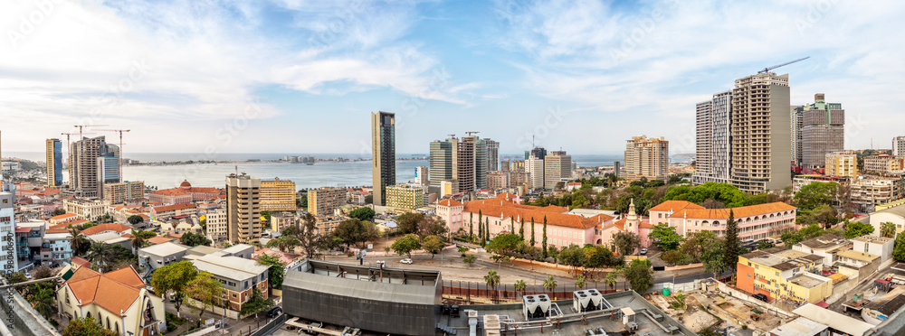
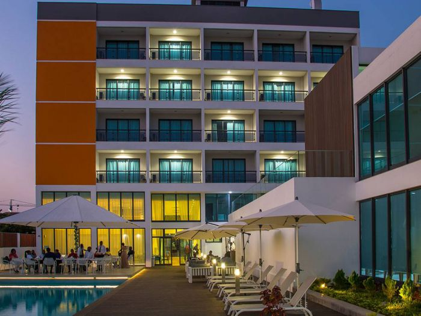
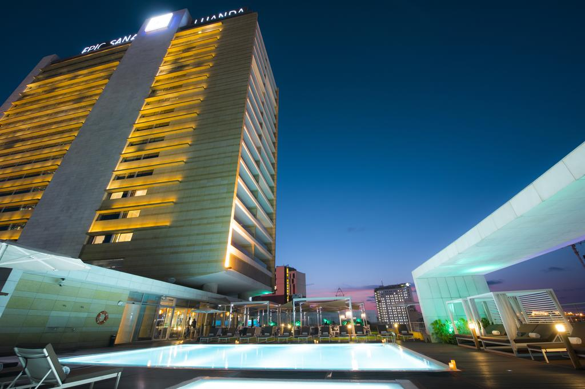
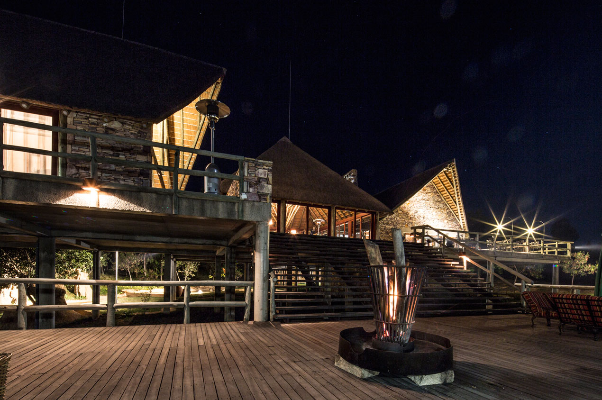

Angola é um País situado em África, localizado na Costa Sudoeste deste continente. Angola é banhada a Oeste pelo Oceano Atlântico e tem uma linha de costa de 1.650km, numa área total de 1.246.700km2. O ponto mais alto de Angola é o Morro do Moco, que tem 2.620m. Cerca de 60% do território são planaltos de 1.000m a 2.000m.
Terra da Dipanda
Terra das acacias rubras
Terra do Cristo Rei
Terra das pedras de Punguandongo
Somos uma empresa de que mostra para si as principáis províncias de Angola, os principais pontos turisticos e sugestoês para hospedagem enquanto visita a nossa mãe Angola
Aqui você encontra mais algumas provincias com os melhores pontos turísticos
Terra da Feloresta do Maiombe
Terra do Bago vermelho
Terra da Palanca negra gigante
Cada províncias tem os seus melhores pontos turisticos, desde as praias, matos, rios, fendas, montanhas, Reservas, parques e muito mais.
Luanda é a capital de Angola, coração financeiro e administrativo do país, mas é também uma província repleta de beleza natural, cultura e excelentes espaços de diversão. O que fazer O encanto das suas belezas naturais numa atmosfera única, oferece um clima propício a actividades ao ar livre. No Parque Nacional de Kissama pode encontrar elefantes, zebras, búfalos e antílopes. Um paraíso para os ecoturista. Dispõe também de actividades de pesca desportiva em mar alto. A costa sul, oferece diversas actividades como expedições de pesca ao tubarão, mergulho, observação de golfinhos e baleias, caminhadas e passeios de moto-quatro.
Benguela é um dos pontos culturais mais activos no país, também conhecida como a cidade das acácias rubras e um dos pilares de desenvolvimento no país. Já estando em Benguela, você tem várias opções de lugares magníficos para entretenimento, aventura e exploração turística. Pode visitar as lindas praias da Caota que é excelente para um mergulho subaquático, a da Caotinha uma pequena praia de águas muito límpidas, à qual se chega pelo Morro da Caota, a Baía Azul, Baía Farta, ou ainda a famosa Praia Morena. A 20 km de Benguela, situa-se o Parque Regional da Chimalavera e a 30km para sudeste, a Reserva Búfalo. Pode ainda visitar um dos melhores portos naturais da costa africana onde o porto de águas profundas liga ao caminho-de-ferro de Benguela, daí atravessa todo o país e as fronteiras da Zâmbia e da República Democrática do Congo.
A Huíla é uma das mais lindas províncias de Angola, conhecida pela magnífica vista da Serra da Leba, o planalto montanhoso que estabelece uma separação fronteiriça entre a Huíla e a província do Namibe. Posto no planalto central (Huíla), você tem várias opções de lugares magníficos para visitar. Pode visitar a deslumbrante Serra da Leba cuja a estrada asfaltada sai do Lubango até ao Namibe, acompanhando a serra com a forma peculiar de uma serpente, a histórica formação geológica Fenda da Tundavala, o ponto de referência turística Cristo Rei, o Morro do Lubango com uma paisagem extraordinária, as Cascátas da Huíla, ou ainda o Parque da Nossa Senhora do Monte.
Luanda é a capital de Angola, coração financeiro e administrativo do país, mas é também uma província repleta de beleza natural, cultura e excelentes espaços de diversão. O que fazer O encanto das suas belezas naturais numa atmosfera única, oferece um clima propício a actividades ao ar livre. No Parque Nacional de Kissama pode encontrar elefantes, zebras, búfalos e antílopes. Um paraíso para os ecoturista. Dispõe também de actividades de pesca desportiva em mar alto. A costa sul, oferece diversas actividades como expedições de pesca ao tubarão, mergulho, observação de golfinhos e baleias, caminhadas e passeios de moto-quatro.
Namibe é uma província de Angola com paisagem maioritariamente desértica, guarda segredos de rara beleza paisagística e natural, como a exótica planta Welwitschia Mirabilis. O símbolo desta província é a planta Welwistchia Mirabilis. É uma planta existente apenas em uma parte do mundo que é na província do Namibe, e está planta cresce no meio do deserto.
A província do Namibe dispõe de belezas, naturais, praias lindas, deserto, rios, montanhas e outras atrações turísticas. Para visitar estes locais sugeridos poderá se hospedar...
Cabinda é uma das 18 províncias de Angola, localizada na região norte do país, sendo a mais setentrional e também único enclave da nação, venha explorar a província de e conhecer os pontos turísticos mais visitados, saiba onde ficar, onde comer, e como de deslocar de um local para o outro. Visitar o Cemitério M´Buco-M´Buadi, conhecido pelo Cemitério dos Reis de Cabinda, alberga dezenas de esculturas que decoram os jazigos. Marco Histórico do Tratado de Simulambuco. Assinado em 1885 entre os príncipes de Cabinda e os reis de Portugal, foi assinalado pelos nativos com a plantação de uma árvore que existe até hoje. Em 1956, foi erguido um padrão em betão.
Uíge é uma província de Angola com uma área de 58 698 km² e a sua população é de 1,4 milhões de habitantes aproximadamente. Fica localizada no extremo norte do país, e suas fronteiras são a norte e leste, com a República Democrática do Congo, a sudeste, com a província de Malanje, a sul com as províncias de Kwanza Norte e do Bengo, e a oeste, com a província do Zaire.
província do Uíge tem belezas naturais e inúmeros sítios históricos para visitar:
Malanje é uma das províncias com os pontos turísticos mais atrativos de Angola. A cidade da tão bem conhecida pelas Quedas de Calandula e o Parque Nacional da Cangandala. Esta providencia os seus visitantes com os melhores momentos de cultura e lazer através do ecoturismo. Nesta província encontramos os seguintes parques e reservas nacionais que são lugares de visita obrigatórias: O Parque Nacional de Kangandala A Reserva Florestal do Caminho-de-Ferro, A Reserva Natural do Luando.E temos também as famosas quedas de Kangandala.
Varios são os Locais de hospedagem e lazer que o Pais e as principais provincias do país tem. Desde a classe mais baixa à mais alta.
   